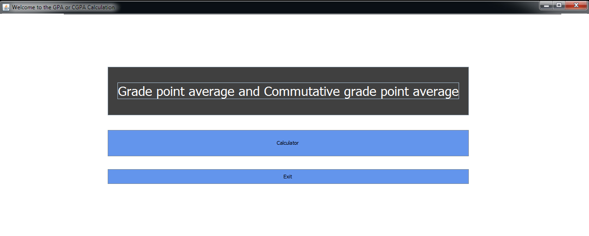

The Landing Interface is displays the welcoming information of the GPA and CGPA calculation. There are two options is the interface:
Calculator:To calculate the GPA or CGPA
Exit:To end the Program fragment
2.2.2. How to use the landing interface
Step 1: To Start the Calculation: Click on the Calculator button to start calculation the Grade Point Average (GPA) or Cumulative Grade Point Average (CGPA)
Step 2: To Exit from the Program: Hit the Exit button
2.2.3. Screen of the Landing Interface

Figure 2.2. Welcoming interface of GPA CGPA calculator